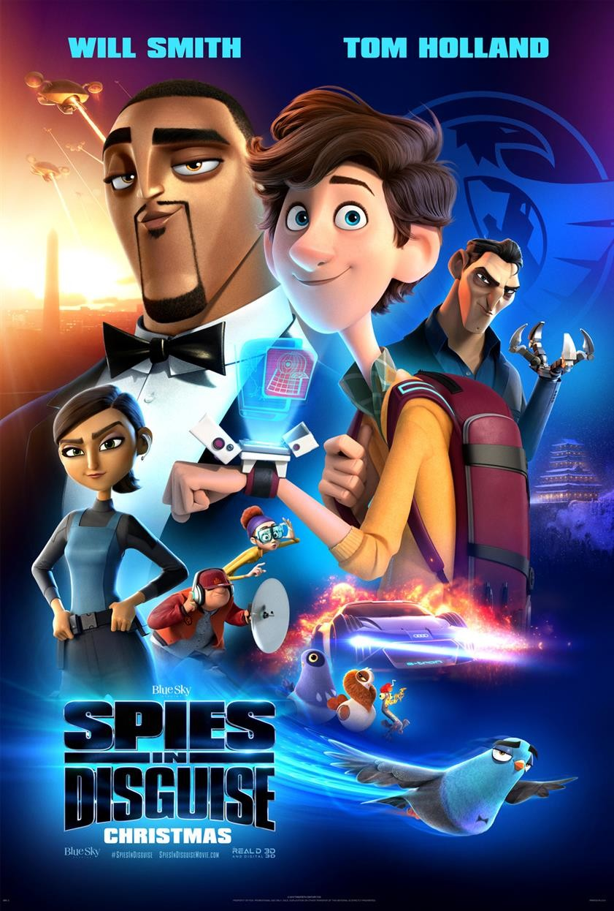

- В главных ролях:

Уилл Смит
Том Холланд
Рашида Джонс
Бен Мендельсон
Камуфляж и шпионаж
год 2019
страна США
слоган -
режиссер Ник Бруно, Трой Квон
сценарий Брэд Коуплэнд, Ллойд Тейлор, Лукас Мартелл, ...
продюсер Питер Чернин, Дженно Топпинг, Кори Эделсон, ...
композитор Теодор Шапиро
монтаж Кристофер Кэмпбелл, Рэнди Трагер
жанр умультфильм, фантастика, боевик, комедия, приключения, семейный, ...
сборы в США $66 671 109
сборы в мире + $104 715 280 = $171 386 389
сборы в России $7 560 630
зрители 2.13 млн
премьера (мир) 4 декабря 2019
премьера (РФ) 9 января 2020, «Двадцатый Век Фокс СНГ»
цифровой релиз 13 марта 2020, «Двадцатый Век Фокс СНГ»
возраст 6+
рейтинг MPAA рейтинг PG
время 102 мин. / 01:42
КиноПоиск
7.0
7.0
IMDb
6.8
6.8
Трейлер